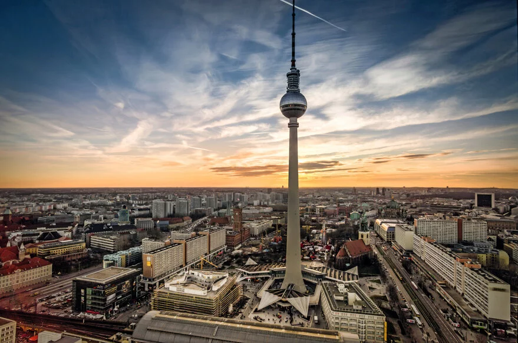
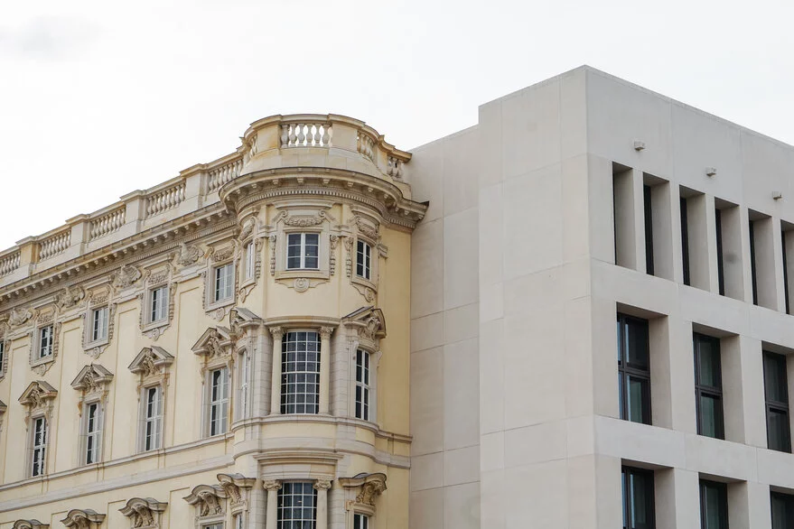

Nur wenig Zeit für einen Berlin-Städtetrip oder auf der Suche nach den Top 5 Sehenswürdigkeiten in
Berlin?
Wir haben die zehn Höhepunkte unter den Berlin-Sehenswürdigkeiten ausgewählt. Keine leichte Wahl –
bietet die Stadt
doch so viele spannende Orte. Auf einer Berlin-Stadtrundfahrt können Sie all diese Orte sehen.
Top 1: Reichstag
Auf dem Bild ist der Berliner Reichstag zu sehen.
Hier können Sie den Politikern auf den Kopf steigen:
Besucher können von der Dachterrasse und der imposanten gläsernen Kuppel auf dem
Reichstag einen Blick auf das Treiben in der Stadt werfen. Rund um den Reichstag
finden sich außerdem viele Regierungsbauten, wie das Bundeskanzleramt, und das Brandenburger
Tor, unser Top 2.
Top 2: Brandenburger Tor
Auf dem Bild ist das Brandenburger Tor zu sehen.
Zweifelsohne ist es das Wahrzeichen der Stadt und Symbol der Wiedervereinigung:
das Brandenburger Tor. 1791 fertiggestellt, war es nur eines von vielen alten Stadttoren rings
um das damals noch überschaubare Berlin. Dem Tor vorgelagert wurde ein Schmuckplatz
angelegt – der Pariser Platz – an dem sich noch heute viele wichtige Bauten der Stadt wie das
geschichtsträchtige Hotel Adlon oder die Akademie der Künste befinden.
Top 3: Fernsehturm

Auf dem Bild ist der Fernsehturm zu sehen.
Bereits von weitem zu erkennen und mit 368 Metern das höchste Gebäude Berlins: der Fernsehturm.
Errichtet in
den 1960er Jahren bietet er Besuchern ein einmaliges 360° Panorama über die Stadt. Der Fernsehturm liegt
direkt am Alexanderplatz, dem Zentrum des alten Ostberlins.
Top 4: Humboldt Forum

Auf dem Bild ist das Humboldt Forum zu sehen.
Gleich gegenüber der Berliner Museumsinsel hat im Herzen der Hauptstadt ein neues, weltoffenes Forum für
Kultur, Kunst und Wissenschaft eröffnet: das Humboldt Forum. Es erstreckt sich – weithin sichtbar - auf
einer Fläche von rund 30.000 Quadratmetern. In hellem Quittegelb leuchten die rekonstruierten barocken
Schlossfassaden. Unter einem Dach und auf fünf Etagen verteilt erwarten Sie hochmoderne interaktive
Ausstellungen. Seit September 2021 sind hier auch die weltberühmten Sammlungen des Ethnologischen
Museums
und des Museums für Asiatische Kunst zu sehen.
Top 5: Gendarmenmarkt
Auf dem Bild ist der Gendarmenmarkt zu sehen.
In unmittelbarer Nähe zur Friedrichstraße, der exklusiven Einkaufsstraße in Berlin-Mitte, befindet sich
einer der schönsten Plätze Berlins: der Gendarmen Markt. Mit dem von Schinkel entworfenen Konzerthaus
sowie
dem Deutschen Dom und Französischen Dom stehen hier drei architektonische Höhepunkte der Hauptstadt.